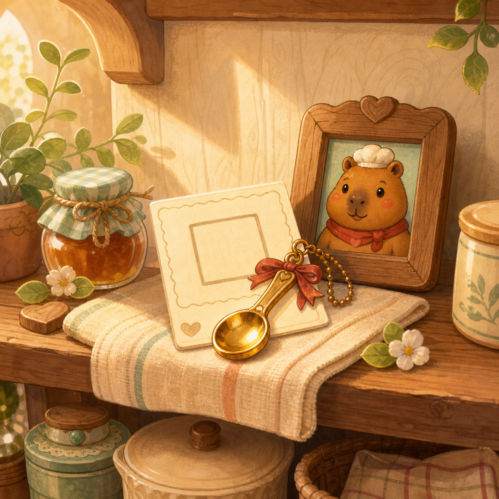

Pip's First Shelf Reward v1

Review as the possible visual template for free-stage reward and album-card art.
Sunny Spoon Studios Art Review
Candidate board for the first free-stage reward style sample. Nothing here is imported by runtime UI until explicit approval.

Review as the possible visual template for free-stage reward and album-card art.